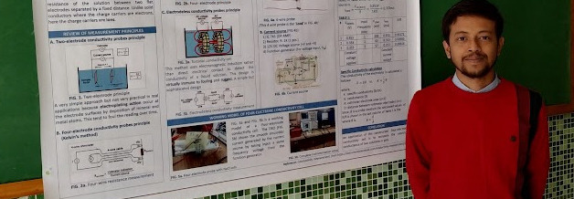

My research unifies principles from multiresolution signal processing and nonlinear systems theory with machine learning. My work combines wavelets, filter banks, multirate systems, time–frequency methods, and Volterra kernels with deep neural networks to develop interpretable and computationally efficient methods for analysing and drawing inferences from signals, images and higher-dimensional data.
Current position: Research Scientist at Nugen Intelligence, Mumbai, Maharashtra
Research area: Representation-space sensing and control of open-weight large language models for domain-aligned truthful generation.
Research Highlights
Recent Updates
- Our RamaNet paper on neural inverse modelling for atmospheric profiling was published in IEEE Signal Processing Letters.
- Defended my Ph.D. thesis at IIT Bombay. The thesis preprint is available on arXiv.
- Released a collection of open-source signal-processing and machine-learning packages.
- Released MRILong for longitudinal analysis of 3D brain MRI.
- Served as lab instructor for a Wavelets and CNN workshop at VNR VJIET, Hyderabad. View the workshop materials.
- Presented our multiresolution MRI segmentation paper at ICASSP 2025.
- Presented our longitudinal brain MRI registration paper at NCC 2025, IIT Delhi.
Research Visuals


Selected Publications
-
Journal
K. K. Tarafdar, A. Y. Tantary, A. Jha, and V. M. Gadre, “RamaNet: Neural inverse model for atmospheric profiling with Ramanujan frame expansion of microwave brightness temperatures,” IEEE Signal Process. Lett., vol. 33, pp. 3531–3535, 2026, doi: 10.1109/LSP.2026.3725502.
-
Book Chapter
K. K. Tarafdar and V. M. Gadre, “Multiresolution Volterra systems for frugal AI,” in Selected Topics in Optical, Microwave and Communication Engineering: Select Proceedings of the International Conference, ICMOCE 2025, D. Ghosh and P. K. Sahu, Eds., Lecture Notes in Electrical Engineering, vol. 1538. Singapore: Springer, 2026.
-
Conference
K. K. Tarafdar, A. Meher, M. Shah, Q. Saifee, D. Kumar, A. V. Nimkar, R. Jayasundar, and V. M. Gadre, “Multiresolution encoder-decoder convolutional neural network for magnetic resonance image segmentation,” in Proc. IEEE Int. Conf. Acoust., Speech Signal Process. (ICASSP), 2025, pp. 1–5, doi: 10.1109/ICASSP49660.2025.10890832.
-
Conference
D. Ghosh, G. Jos, K. K. Tarafdar, D. Kumar, R. Jayasundar, and V. M. Gadre, “Spatiotemporal registration of longitudinal brain MRI acquisitions by identifying and matching multiresolution triplet pairs,” in Proc. Nat. Conf. Commun. (NCC), 2025, pp. 1–6, doi: 10.1109/NCC63735.2025.10983208.
-
Conference
K. K. Tarafdar, Q. Saifee, and V. M. Gadre, “A unified neural MRA architecture combining wavelet CNN and wavelet pooling for texture classification,” in Proc. IEEE Int. Conf. Signal Process. Commun. (SPCOM), 2022, pp. 1–5, doi: 10.1109/SPCOM55316.2022.9840760.
Selected Software
- Medical imaging
MRILong — CPU-based pipeline for 3D brain MRI skull stripping, tissue segmentation, and longitudinal measurements.
- Deep learning
MEDCNN — Two-dimensional multiresolution encoder-decoder CNN components for image segmentation research.
- Wavelet transforms
TFDWT — Fast differentiable 1D, 2D, and 3D DWT/IDWT layers for TensorFlow learning systems.
- Nonlinear systems
VolterraSys — Trainable linear and nonlinear Volterra-kernel layers in natural and multiresolution bases.
- Periodicity analysis
RamanujanFrame — Ramanujan frame expansion and periodicity transforms for detecting hidden integer periods in short discrete signals.
Teaching Experience
My teaching experience consists of teaching assistantships completed during my postgraduate studies at IIT Bombay and NIT Rourkela.
IIT Bombay — Teaching Assistant
- Wavelets (Autumn 2022–2024)
- Digital Signal Processing (Spring 2022–2024)
- Electronic Systems Design (Autumn 2021)
NIT Rourkela — Teaching Assistant
- Medical Equipment Design Laboratory (Spring 2019)
- Biomedical Signal Processing and Analysis (Autumn 2018)
Additional Academic Support & Mentoring
- NPTEL: Foundations of Wavelets and Multirate Digital Signal Processing (Spring 2023–2025)
- Mentored undergraduate research interns at Sardar Patel Institute of Technology (Spring 2023–2025)
About Me

- Ph.D.: Electrical Engineering, IIT Bombay, 2026
- Thesis: Interpretable and Frugal Learning Systems Employing Multiresolution Pyramids and Volterra Kernels · arXiv:2606.15011
- Supervisor: Prof. Vikram M. Gadre
- Fellowship & support: Prime Minister’s Research Fellowship (PMRF), followed by later-stage Ph.D. project-staff support from the Koita Centre for Digital Health (KCDH) and ANRF-PAIR.
Ph.D. coursework
In my free time, I enjoy gardening, playing video games, listening to stories about mythology and history, and exploring historical and archaeological sites.